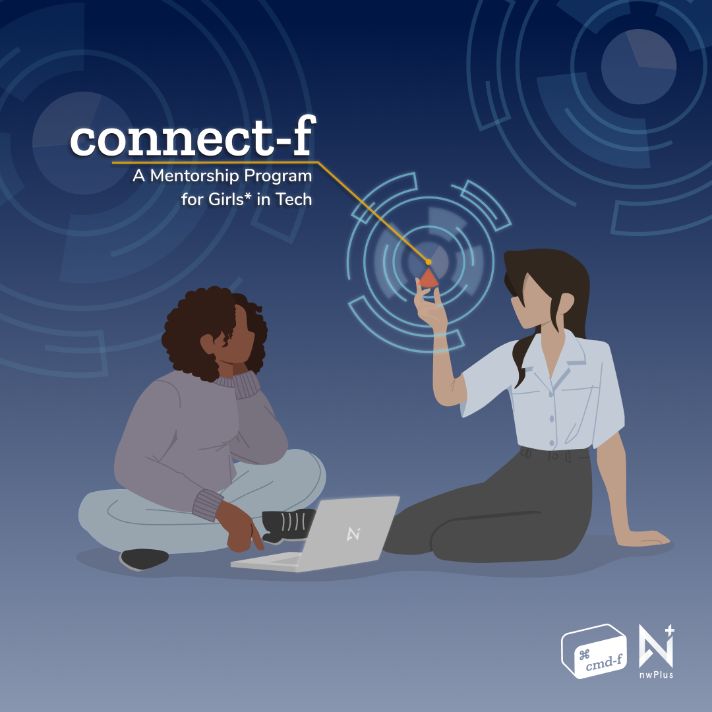
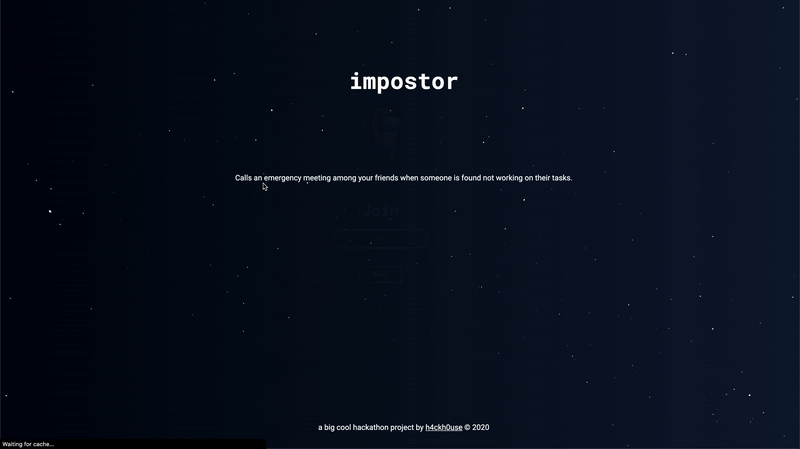

projects.
-
Designing cmd-f
+
British Columbia's first and largest all-women* hackathon
Helping build two iterations of cmd-f has been one of the most rewarding explorations of my student career. Each year we've poured hours of thought, discussion and research to ensure women* feel welcome, supported, confident and that they belong in and are completely capable of shaping the future of this industry. With charity donation initiatives and a greater focus on wellness/self-care, cmd-f has shifted away from the traditional pressures of hackathon project completion. As a result, we saw an incredible increase in beginners and STEM newcomers stepping out to learn, network and grow. Logistics aside, I'm very grateful to have the additional space to transfer my visions to visual designs. Including designing our latest mentorship program (connect-f) and working with fellow designers to visualize the 2021 hackathon website and its event assets!
Check it out: website
-
Impostor
+
Bringing productivity to remote work through some friendly public humiliation
Impostor is a productivity pomodoro designed to keep groups on task even when working remotely. Join a room with friends, customize your own avatar, communicate through the built-in chat and keep each other on task (don't be caught as the impostor). The Chrome extension monitors your browser tabs, checking against a custom list of unproductive sites. If one of those websites is visited, a websocket connection will ping the backend and notify all other users in the room of your action.
DubHacks 2020 finalist and Disney: Best Collaboration and Storytelling prize.
Check it out: website | devpost | github -
Wanderlist
+
A travel planning and sharing social networking site
The web app acts as a social media service dedicated towards trip planning, documenting and sharing. Upon logging in, a user can browse through others posts and view itinerary details such as duration, attractions, activities, and restaurants (can also search and filter for specific users or locations). Additionaly, admin users can moderate and view special stats to help track the growth of the site!
Utilized database normalization to future proof code and improve data integrity. Implemented various division, aggregation, join, projection, selection, update, deletion queries with interface for user to specify conditions.
Check it out: github
-
To Due
+
A task manager application
Developed a task parser to extract priorities, status, deadlines, etc. from any natural English description user gives to construct task objects in the to do list. Implemented task integration with object-oriented software design patterns. Agile and thorough implementation and documentation of code through writing JUnit tests with 100% code coverage. -
Personal Website
+
What you're on right now :)
A fairly Vanilla JS attempt at my first portfolio website. Illustrated personal graphics and icons using Figma. Incorporated a custom natural language chatbot with Dialogflow. As I progress through my tech adventure I plan to further improve the site, support project list views, animate my landing page graphic, further train the chatbot, add a "night" mode theme, dynamic refactoring and much more pizazz ahead!
Check it out: github